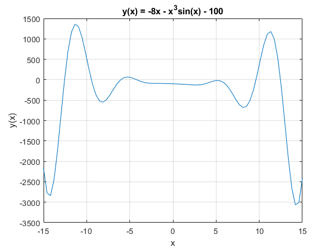
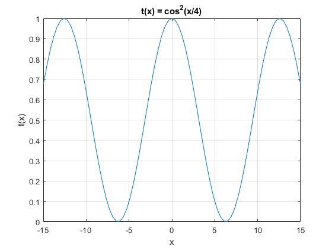
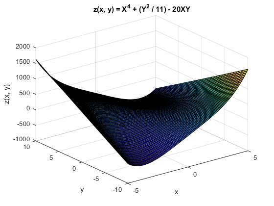
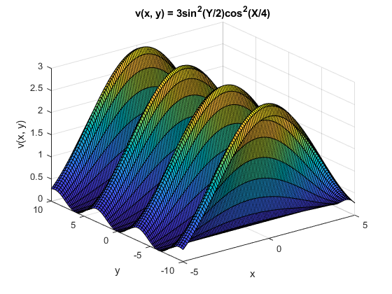
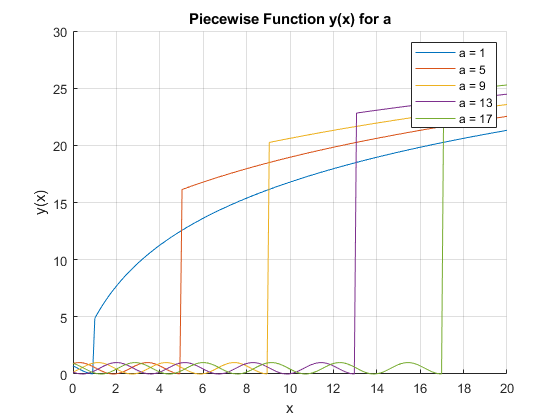
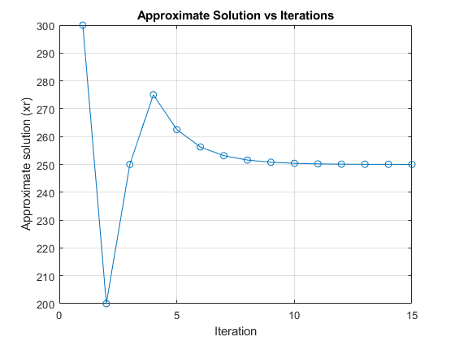
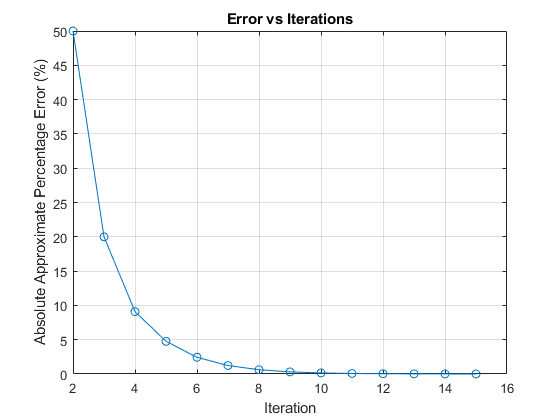
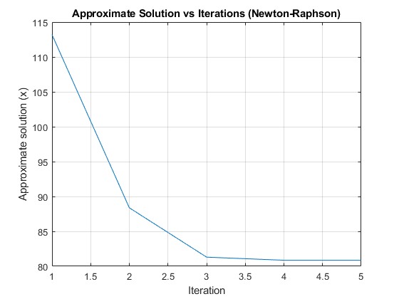
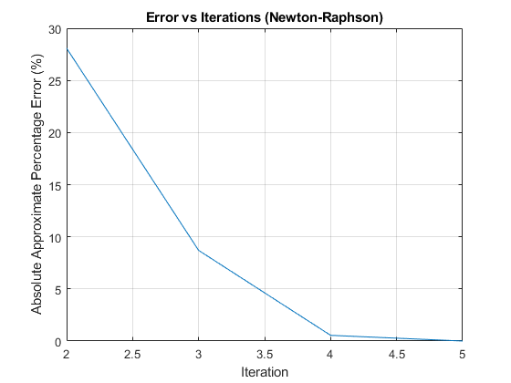
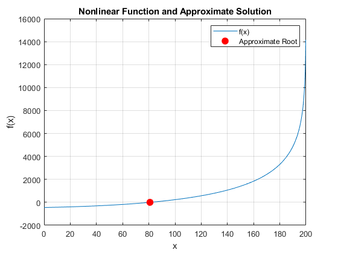

Contents
Laboratory Assignment #1: Basic Programming with MATLAB, Errors, and Root Finding Methods
Problem 1. Arithmetic Operations
clear
clc
close all
x = 2^5 / (4^2 + 1);
y = (1 / 7^2 - 1)^(-1);
N = sqrt((x / 6) + (x^4 / 2) + (x^(2/3) / 3) - (6 / (x * y)));
P = x + 2 * y + sin(pi / 4) + N;
fprintf('x = %.4f\n', x);
fprintf('y = %.4f\n', y);
fprintf('N = %.4f\n', N);
fprintf('P = %.4f\n', P);
x = 1.8824
y = -1.0208
N = 3.1971
P = 3.7449
Problem 2.1. Plotting
clear
clc
close all
x = linspace(-15, 15, 75);
y = -8 * x - x.^3 .* sin(x) - 100;
t = cos(x / 4).^2;
figure;
plot(x, y);
xlabel('x');
ylabel('y(x)');
title('y(x) = -8x - x^3sin(x) - 100');
grid on;
figure;
plot(x, t);
xlabel('x');
ylabel('t(x)');
title('t(x) = cos^2(x/4)');
grid on;
 
Problem 2.2. Plotting
clear
clc
close all
x = linspace(-5, 5, 120);
y = linspace(-10, 10, 60);
[X, Y] = meshgrid(x, y);
z = X.^4 + (Y.^2 / 11) - 20 * X .* Y;
v = 3 * sin(Y / 2).^2 .* cos(X / 4).^2;
figure;
surf(X, Y, z);
xlabel('x');
ylabel('y');
zlabel('z(x, y)');
title('z(x, y) = X^4 + (Y^2 / 11) - 20XY');
grid on;
figure;
surf(X, Y, v);
xlabel('x');
ylabel('y');
zlabel('v(x, y)');
title('v(x, y) = 3sin^2(Y/2)cos^2(X/4)');
grid on;
 
Problem 3. Matrix and Vector Operations
clear
clc
close all
disp('Problem 3.1')
A = rand(10);
B = 10 * ones(10);
R = A * B;
disp(R);
disp('Problem 3.2')
R(:, 3) = 3;
R(6, :) = log(10);
R(3, 9) = 0;
R(1, 5) = 0;
R(8, 2) = 0;
R(8, 8) = 0;
disp(R);
disp('Problem 3.3')
x = A(2, :) * A(:, 9);
y = A(10, 2) / B(1, 7);
m = (x * y) / (sqrt(x) + y);
fprintf('x = %.4f\n', x);
fprintf('y = %.4f\n', y);
fprintf('m = %.4f\n', m);
disp('Problem 3.4')
D = m * R';
det_D = det(D);
rank_D = rank(D);
eig_D = eig(D);
fprintf('Determinant of D = %.4f\n', det_D);
fprintf('Rank of D = %d\n', rank_D);
disp('Eigenvalues of D:');
disp(eig_D);
Problem 3.1
Columns 1 through 7
50.6839 50.6839 50.6839 50.6839 50.6839 50.6839 50.6839
43.9935 43.9935 43.9935 43.9935 43.9935 43.9935 43.9935
60.6712 60.6712 60.6712 60.6712 60.6712 60.6712 60.6712
56.0822 56.0822 56.0822 56.0822 56.0822 56.0822 56.0822
61.8575 61.8575 61.8575 61.8575 61.8575 61.8575 61.8575
45.3377 45.3377 45.3377 45.3377 45.3377 45.3377 45.3377
56.1339 56.1339 56.1339 56.1339 56.1339 56.1339 56.1339
47.7147 47.7147 47.7147 47.7147 47.7147 47.7147 47.7147
58.0773 58.0773 58.0773 58.0773 58.0773 58.0773 58.0773
47.4425 47.4425 47.4425 47.4425 47.4425 47.4425 47.4425
Columns 8 through 10
50.6839 50.6839 50.6839
43.9935 43.9935 43.9935
60.6712 60.6712 60.6712
56.0822 56.0822 56.0822
61.8575 61.8575 61.8575
45.3377 45.3377 45.3377
56.1339 56.1339 56.1339
47.7147 47.7147 47.7147
58.0773 58.0773 58.0773
47.4425 47.4425 47.4425
Problem 3.2
Columns 1 through 7
50.6839 50.6839 3.0000 50.6839 0 50.6839 50.6839
43.9935 43.9935 3.0000 43.9935 43.9935 43.9935 43.9935
60.6712 60.6712 3.0000 60.6712 60.6712 60.6712 60.6712
56.0822 56.0822 3.0000 56.0822 56.0822 56.0822 56.0822
61.8575 61.8575 3.0000 61.8575 61.8575 61.8575 61.8575
2.3026 2.3026 2.3026 2.3026 2.3026 2.3026 2.3026
56.1339 56.1339 3.0000 56.1339 56.1339 56.1339 56.1339
47.7147 0 3.0000 47.7147 47.7147 47.7147 47.7147
58.0773 58.0773 3.0000 58.0773 58.0773 58.0773 58.0773
47.4425 47.4425 3.0000 47.4425 47.4425 47.4425 47.4425
Columns 8 through 10
50.6839 50.6839 50.6839
43.9935 43.9935 43.9935
60.6712 0 60.6712
56.0822 56.0822 56.0822
61.8575 61.8575 61.8575
2.3026 2.3026 2.3026
56.1339 56.1339 56.1339
0 47.7147 47.7147
58.0773 58.0773 58.0773
47.4425 47.4425 47.4425
Problem 3.3
x = 2.4391
y = 0.0959
m = 0.1412
Problem 3.4
Determinant of D = 0.0000
Rank of D = 5
Eigenvalues of D:
57.9286 + 0.0000i
-5.6409 + 0.0000i
1.7495 + 0.0000i
-0.2251 + 0.3355i
-0.2251 - 0.3355i
-0.0000 + 0.0000i
0.0000 + 0.0000i
0.0000 + 0.0000i
-0.0000 + 0.0000i
-0.0000 + 0.0000i
Problem 4.1 Conditionals, Logical Operators, and Loops
clear
clc
close all
test_cases = [1, -3, 2; 1, -2, 1; 1, 2, 5];
for i = 1:size(test_cases, 1)
a = test_cases(i, 1);
b = test_cases(i, 2);
c = test_cases(i, 3);
discriminant = b^2 - 4*a*c;
if discriminant > 0
root1 = (-b + sqrt(discriminant)) / (2*a);
root2 = (-b - sqrt(discriminant)) / (2*a);
fprintf('Case %d: Real and distinct roots: root1 = %.4f, root2 = %.4f\n', i, root1, root2);
elseif discriminant == 0
root = -b / (2*a);
fprintf('Case %d: Real and repeated root: root = %.4f\n', i, root);
elseif discriminant < 0
realPart = -b / (2*a);
imagPart = sqrt(abs(discriminant)) / (2*a);
fprintf('Case %d: Complex roots: root1 = %.4f + %.4fi, root2 = %.4f - %.4fi\n', i, realPart, imagPart, realPart, imagPart);
else
fprintf('Invalid entry\n');
end
end
Case 1: Real and distinct roots: root1 = 2.0000, root2 = 1.0000
Case 2: Real and repeated root: root = 1.0000
Case 3: Complex roots: root1 = -1.0000 + 2.0000i, root2 = -1.0000 - 2.0000i
Problem 4.2 Conditionals, Logical Operators, and Loops
clear
clc
close all
a_values = [1, 5, 9, 13, 17];
x = linspace(0, 20, 200);
y = zeros(length(a_values), length(x));
figure;
hold on;
for i = 1:length(a_values)
a = a_values(i);
for j = 1:length(x)
if x(j) <= a
y(i, j) = sin(x(j) - a)^2;
else
y(i, j) = 7 * log(x(j) + a);
end
end
plot(x, y(i, :), 'DisplayName', sprintf('a = %d', a_values(i)));
end
xlabel('x');
ylabel('y(x)');
title('Piecewise Function y(x) for a');
legend show;
grid on;
hold off;

Problem 4.3 Conditionals, Logical Operators, and Loops
clear
clc
close all
A = zeros(10);
for i = 1:10
for j = 1:10
A(i, j) = i / j;
end
end
R = A;
for i = 1:10
for j = 1:10
if R(i, j) > 1.1
R(i, j) = 0;
end
end
end
T = A;
for i = 1:10
for j = 1:10
if T(i, j) < 2.5
T(i, j) = -8;
end
end
end
disp('Matrix A:');
disp(A);
disp('Matrix R:');
disp(R);
disp('Matrix T:');
disp(T);
Matrix A:
Columns 1 through 7
1.0000 0.5000 0.3333 0.2500 0.2000 0.1667 0.1429
2.0000 1.0000 0.6667 0.5000 0.4000 0.3333 0.2857
3.0000 1.5000 1.0000 0.7500 0.6000 0.5000 0.4286
4.0000 2.0000 1.3333 1.0000 0.8000 0.6667 0.5714
5.0000 2.5000 1.6667 1.2500 1.0000 0.8333 0.7143
6.0000 3.0000 2.0000 1.5000 1.2000 1.0000 0.8571
7.0000 3.5000 2.3333 1.7500 1.4000 1.1667 1.0000
8.0000 4.0000 2.6667 2.0000 1.6000 1.3333 1.1429
9.0000 4.5000 3.0000 2.2500 1.8000 1.5000 1.2857
10.0000 5.0000 3.3333 2.5000 2.0000 1.6667 1.4286
Columns 8 through 10
0.1250 0.1111 0.1000
0.2500 0.2222 0.2000
0.3750 0.3333 0.3000
0.5000 0.4444 0.4000
0.6250 0.5556 0.5000
0.7500 0.6667 0.6000
0.8750 0.7778 0.7000
1.0000 0.8889 0.8000
1.1250 1.0000 0.9000
1.2500 1.1111 1.0000
Matrix R:
Columns 1 through 7
1.0000 0.5000 0.3333 0.2500 0.2000 0.1667 0.1429
0 1.0000 0.6667 0.5000 0.4000 0.3333 0.2857
0 0 1.0000 0.7500 0.6000 0.5000 0.4286
0 0 0 1.0000 0.8000 0.6667 0.5714
0 0 0 0 1.0000 0.8333 0.7143
0 0 0 0 0 1.0000 0.8571
0 0 0 0 0 0 1.0000
0 0 0 0 0 0 0
0 0 0 0 0 0 0
0 0 0 0 0 0 0
Columns 8 through 10
0.1250 0.1111 0.1000
0.2500 0.2222 0.2000
0.3750 0.3333 0.3000
0.5000 0.4444 0.4000
0.6250 0.5556 0.5000
0.7500 0.6667 0.6000
0.8750 0.7778 0.7000
1.0000 0.8889 0.8000
0 1.0000 0.9000
0 0 1.0000
Matrix T:
Columns 1 through 7
-8.0000 -8.0000 -8.0000 -8.0000 -8.0000 -8.0000 -8.0000
-8.0000 -8.0000 -8.0000 -8.0000 -8.0000 -8.0000 -8.0000
3.0000 -8.0000 -8.0000 -8.0000 -8.0000 -8.0000 -8.0000
4.0000 -8.0000 -8.0000 -8.0000 -8.0000 -8.0000 -8.0000
5.0000 2.5000 -8.0000 -8.0000 -8.0000 -8.0000 -8.0000
6.0000 3.0000 -8.0000 -8.0000 -8.0000 -8.0000 -8.0000
7.0000 3.5000 -8.0000 -8.0000 -8.0000 -8.0000 -8.0000
8.0000 4.0000 2.6667 -8.0000 -8.0000 -8.0000 -8.0000
9.0000 4.5000 3.0000 -8.0000 -8.0000 -8.0000 -8.0000
10.0000 5.0000 3.3333 2.5000 -8.0000 -8.0000 -8.0000
Columns 8 through 10
-8.0000 -8.0000 -8.0000
-8.0000 -8.0000 -8.0000
-8.0000 -8.0000 -8.0000
-8.0000 -8.0000 -8.0000
-8.0000 -8.0000 -8.0000
-8.0000 -8.0000 -8.0000
-8.0000 -8.0000 -8.0000
-8.0000 -8.0000 -8.0000
-8.0000 -8.0000 -8.0000
-8.0000 -8.0000 -8.0000
Problem 5.1 Root Finding with Bisection Method
clear
clc
close all
f = @(x) 2400 * log(2.8e6 / (2.8e6 - 1.4e4 * x)) - 9.81 * x - 450;
xl = 100;
xu = 500;
tol = 1e-4;
max_iter = 50;
xr_values = zeros(1, max_iter);
error_values = zeros(1, max_iter);
for i = 1:max_iter
xr = (xl + xu) / 2;
xr_values(i) = xr;
if i > 1
error_values(i) = abs((xr_values(i) - xr_values(i-1)) / xr_values(i)) * 100;
else
error_values(i) = NaN;
end
if f(xr) == 0 || abs((xu - xl) / xr) < tol
break;
elseif f(xl) * f(xr) < 0
xu = xr;
else
xl = xr;
end
end
xr_values = xr_values(1:i);
error_values = error_values(2:i);
fprintf('Approximate root = %.4f\n', xr);
figure;
plot(1:i, xr_values, '-o');
xlabel('Iteration');
ylabel('Approximate solution (xr)');
title('Approximate Solution vs Iterations');
grid on;
figure;
plot(2:i, error_values, '-o');
xlabel('Iteration');
ylabel('Absolute Approximate Percentage Error (%)');
title('Error vs Iterations');
grid on;
Approximate root = 250.0122
 
Problem 5.2 Root Finding with Newton-Raphson Method
clear
clc
close all
f = @(x) 2400 * log(2.8e6 / (2.8e6 - 1.4e4 * x)) - 9.81 * x - 450;
f_prime = @(x) (2400 * 1.4e4) / (2.8e6 - 1.4e4 * x) - 9.81;
x0 = 150;
tol = 1e-4;
max_iter = 50;
x_values = zeros(1, max_iter);
error_values = zeros(1, max_iter);
for i = 1:max_iter
f_prime_value = f_prime(x0);
x_new = x0 - f(x0) / f_prime_value;
x_values(i) = x_new;
if i > 1
error_values(i) = abs((x_values(i) - x_values(i-1)) / x_values(i)) * 100;
else
error_values(i) = NaN;
end
if abs(f(x_new)) < tol
break;
end
x0 = x_new;
end
x_values = x_values(1:i);
error_values = error_values(2:i);
fprintf('Approximate root = %.4f\n', x_new);
figure;
plot(1:i, x_values);
xlabel('Iteration');
ylabel('Approximate solution (x)');
title('Approximate Solution vs Iterations (Newton-Raphson)');
grid on;
figure;
plot(2:i, error_values);
xlabel('Iteration');
ylabel('Absolute Approximate Percentage Error (%)');
title('Error vs Iterations (Newton-Raphson)');
grid on;
Approximate root = 80.8593
 
Problem 5.3 Plot of Nonlinear Function and Approximate Solution
clear
clc
close all
f = @(x) 2400 * log(2.8e6 ./ (2.8e6 - 1.4e4 .* x)) - 9.81 .* x - 450;
x_plot = linspace(0, 200, 1000);
y_plot = f(x_plot);
figure;
plot(x_plot, y_plot);
hold on;
root = 80.8593;
plot(root, f(root), 'ro', 'MarkerSize', 8, 'MarkerFaceColor', 'r');
xlabel('x');
ylabel('f(x)');
title('Nonlinear Function and Approximate Solution');
grid on;
legend('f(x)', 'Approximate Root');
hold off;
